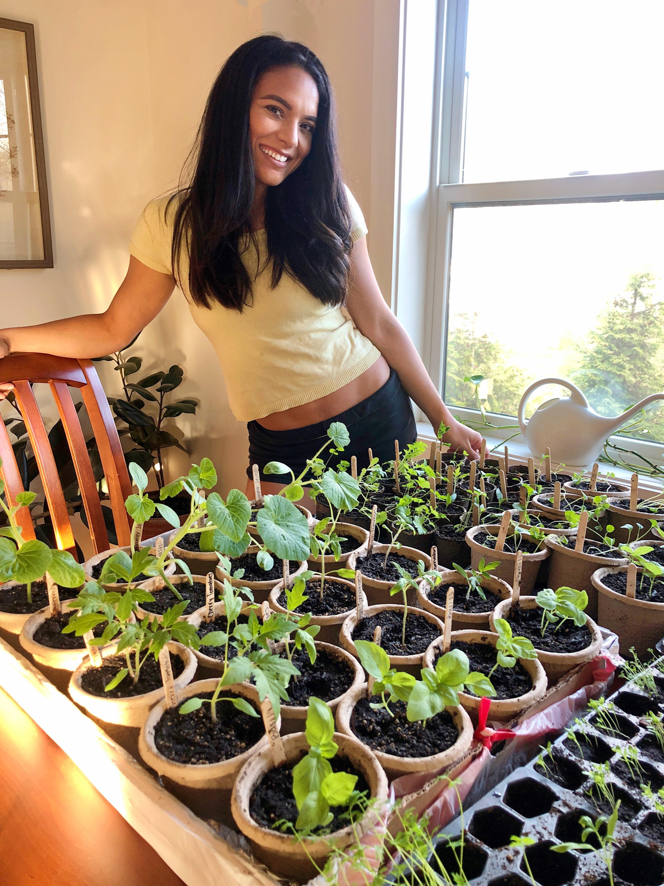
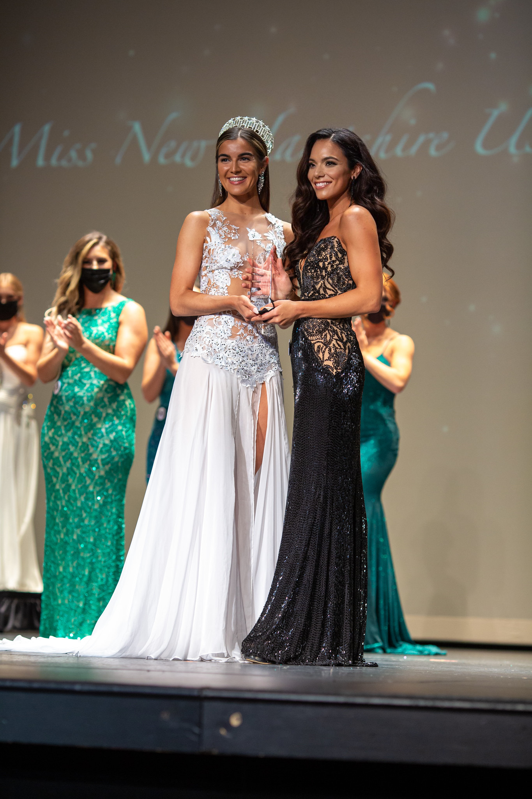

"I started this journey six years ago as a young girl with no confidence, living life to the expectations of others,
and physically and mentally unwell. That changed when I started competing in pageants.
Many times on the road to pursuing this dream, I was told to give up.
Had I listened and stopped watering those dreams at any point, I wouldn't have sprouted into my fullest potential.
Today, I couldn't be more in love with the woman I have become.
I am confident, empowered, and secure in myself.
I define success by pursuing the dreams you can't stop thinking about, despite what those around you might say about it.
By doing just that, I hope to inspire others to do the same. All limitations are self-imposed."
After moving from Asuncion, Paraguay in 1999, she was naturalized and became a citizen on September 23rd, 2016.
Camila currently works at Portsmouth Regional Hospital as a Health Information Management Specialist in the medical records department. She also works as an integrative nutritionist through her own practice, From Roots to Self.
In 2018 she graduated from Wichita State University with her B.A. in Psychology. Currently she is remotely finishing her Masters of Science in Integrative Health in Nutrition with a focus in Herbal Medicine from Maryland University of Integrative Health. She will then pursue her Doctorate in Clinical Nutrition.
Camila enjoys gardening, herbalism, cooking, and spending time outdoors.
She plans to help revolutionize the standards of ingredients allowed in food products and create more sustainable practices in agriculture and food production.
Camila was voted Miss Congeniality by her fellow contestants at Miss New Hampshire USA 2021.
On May 1, 2022 Camila Sacco was crowned Miss New Hampshire USA 2022.
New Hampshire has yet to bring home the title of Miss USA. Camila hopes to make history by being the first.